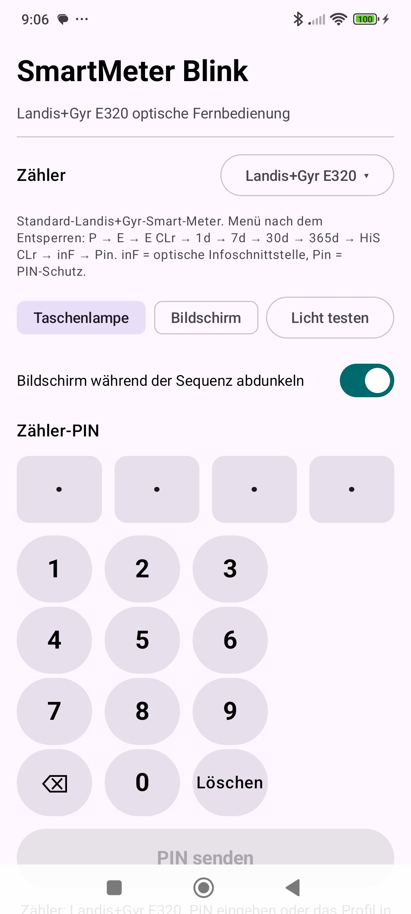

Version 1.0 — App for Android (application id de.smartmeter.blink)
SmartMeter Blink turns the light of your phone into an optical remote control for a
Landis+Gyr/EYKON E320 (or similar) smart electricity meter. The meter has an optical port
and accepts button presses as short or long bursts of light. The app uses the camera
torch or a full-white screen flash to send the 4-digit
PIN of the meter and to toggle settings such as the optical info interface (inF)
and the PIN protection (Pin) — without touching the meter's physical buttons.
Included in this guide (German version: Benutzerhandbuch.pdf).

E, E CLr, 1d, 7d, 30d,
365d or HiS CLr. Long flashes are only safe on the displays
P, inF and Pin. Always start every action from the
P (power) display.
SmartMeter-Blink.apk on the phone (Share or copy the file and open it; allow "install unknown apps" when asked).The app needs two permissions: Camera (torch) and Vibrate (feedback during flashes). No other data is collected; everything stays on the device.
Meter buttons are triggered by light. One short flash equals one short button press, a long flash (5–6 s) equals keeping the button pressed.
P). One short flash wakes it
into the display test (all segments, about 4 s), then the PIN prompt.1 → one flash, 2 → two flashes, …, 9 → nine flashes,
0 → no flash (the app simply waits).Starting from P, each short flash scrolls one step:
| Step | Display | Meaning | Long flash |
|---|---|---|---|
| 0 | P | Momentary power | safe |
| 1 | E | Own-period consumption | dangerous |
| 2 | E CLr | Clear own period | ⚠ erases it |
| 3 | 1d | Last 24 hours | dangerous |
| 4 | 7d | Last 7 days | dangerous |
| 5 | 30d | Last 30 days | dangerous |
| 6 | 365d | Last 365 days | dangerous |
| 7 | HiS CLr | Clear history | ⚠ erases it |
| 8 | inF | Optical info interface | toggles on/off |
| 9 | Pin | PIN protection | toggles on/off |
The next pulse after Pin returns to the power display. Long flashes are only
safe on P, inF and Pin — the two CLr items
wipe stored values.
Shows the active profile (default Landis+Gyr/EYKON E320) and its description.
Tap the button next to "Meter" to open the profile menu:
select another profile, ＋ New profile (copy current),
Export current profile…, Export all profiles…,
Import from JSON… and Delete current profile.
Torch uses the camera LED; it only works if the device has a flash and the Camera permission is granted. Screen flashes the whole display white and works on every device. Test light lights the chosen source for ~2 s.
During a run the screen turns black and only shows the progress (ideal in the dark). You can stop the sequence by tapping anywhere.
Keypad with digits, backspace and clear. The required PIN length (default 4, configurable 1–8) is shown by the number of boxes. During a run the currently-transmitted digit is highlighted.
Send PIN starts the full sequence (only enabled when the PIN is complete). While running, the same button becomes Stop.
Shows how far the sequence is and an estimate such as ~42s left.
Two cards automate the menu walk: Optical interface (inF) and PIN requirement (Pin). Each card has a per-run switch "Send PIN first (meter asks for PIN)":
Pin oFF — with PIN disabled every flash scrolls the menu, so
sending PIN digits would walk past your target (the app warns about this).The line "Steps after PIN: N" shows how many scroll steps the profile uses for that action (edit under Settings). If the PIN is required but not yet entered, a dialog asks for it first.
Short = one menu step; Long = hold (toggle an item).
Useful when you want to scroll yourself; remember the safety warning, never long-flash a
CLr display.
The app also works in landscape orientation: simply rotate the phone. The content scrolls vertically, so nothing is cut off.
All timings and step counts are stored per profile, so you can tweak them for a different meter model and keep multiple presets.
Example JSON:
[ { "format": 1,
"id": "e320", "name": "Landis+Gyr/EYKON E320", "pinLength": 4,
"pulseLengthMs": 180, "pulseGapMs": 320, "digitWaitMs": 3400, "longPulseMs": 6000,
"opticalScrolls": 8, "pinScrolls": 9,
"description": "Standard meter. Menu: P → E → E CLr → 1d → 7d → 30d → 365d → HiS CLr → inF → Pin." } ]
| Parameter | Default | Adjustable | Used for |
|---|---|---|---|
| Pulse length | 180 ms | 100–400 ms | Each single flash |
| Pulse gap | 320 ms | 100–600 ms | Between flashes |
| Digit wait | 3.4 s | 2.0–5.0 s | Meter accepting a digit |
| Long pulse | 6.0 s | 4.0–9.0 s | Toggling inF / Pin |
| Manual short | 250 ms | fixed | Wake pulse & manual "Short" |
| Wake wait | 4.0 s | fixed | Wait for the display test |
| Countdown | 3 s | fixed | Before each sequence |
| Problem | Solution |
|---|---|
| Torch does not switch on | Grant the Camera permission (app start or Android app settings). The app shows the reason in red. Some devices reject the torch while another app uses the camera — close it. |
| "No torch on this device" | The phone has no flash camera. Use the Screen light source instead. |
| Meter does not wake / no response | Hold the light exactly on the optical port, keep it steady, and make sure "Wake with display test first" is on. Increase the pulse gap in Settings if the meter rejects flashes. |
| Sequence finishes but the meter did not unlock | Aim better and/or increase the digit wait. Ensure you entered the correct PIN. |
Meter shows Pin oFF and the menu jumps past the target | Switch "Send PIN first" off for the quick action. |
| App language | The app follows the phone's display language: German phone → German UI, otherwise English. |
Long-press the app icon → Uninstall. All profiles and settings are stored only on the device and are removed with the app, unless you exported them to a JSON file first.
Landis+Gyr, EYKON and E320 are trademarks of their owners. This app is an independent hobby tool; the manufacturer is not affiliated.
This app and its source code may not be used to obtain a meter PIN by brute force or to gain unauthorized access to a meter.